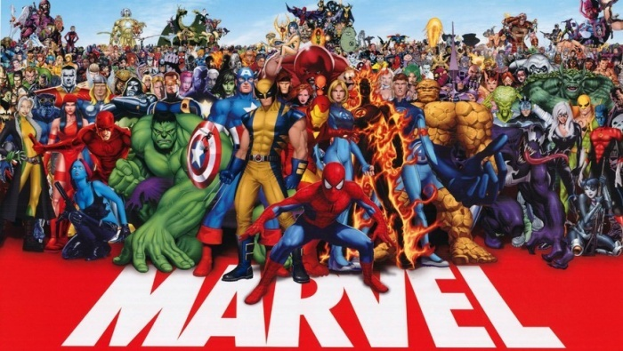
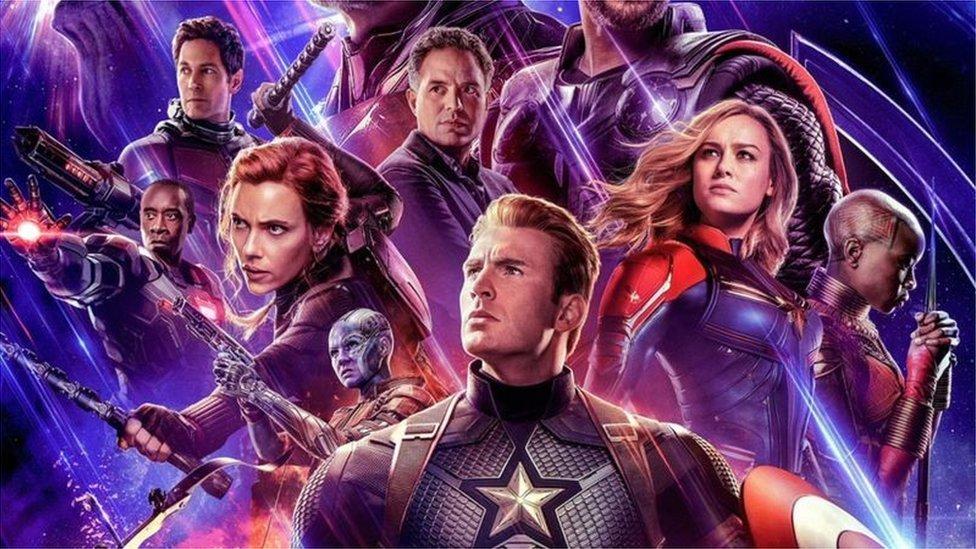
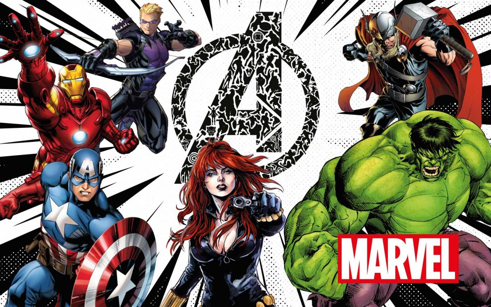

Origen de Los Vengadores
Creadores: Stan Lee y Jack Kirby
Primera aparición: The Avengers #1 (1963)
Editorial: Marvel Comics
Los Vengadores nacen cuando varios héroes se unen para detener a Loki, el dios del engaño. Este evento marcó el inicio de una de las alianzas más legendarias del cómic. La primera formación estuvo compuesta por Iron Man, Thor, Hulk, Ant-Man y la Avispa. Con el tiempo, su lema se volvió icónico: “¡Avengers, assemble!”
Los Integrantes Más Icónicos
Algunos miembros destacados:
Capitán América, Iron Man, Thor, Hulk, Viuda Negra, Ojo de Halcón, Pantera Negra, Bruja Escarlata, Visión, Doctor Strange, Spider-Man y Capitán Marvel.
Cada héroe aporta algo único: la estrategia del Capitán América, la tecnología de Tony Stark, la fuerza de Hulk, la magia del Doctor Strange o el poder cósmico de la Capitana Marvel. Juntos representan la diversidad y fortaleza del universo Marvel.
Principales Enemigos

Villanos recurrentes: Loki, Ultrón, Thanos, Kang el Conquistador, Cráneo Rojo, Dormammu, y la organización Hydra.
Los enemigos de los Vengadores son tan poderosos como variados: desde dioses hasta seres cósmicos. Sin embargo, el trabajo en equipo, la lealtad y la determinación siempre los han mantenido unidos frente a la oscuridad.
Las Etapas Más Relevantes
Etapas destacadas:
• Era clásica (1963–1980): Consolidación del grupo y primeras batallas con Loki y Ultrón.
• Era moderna (1990–2000): Expansión del equipo, nuevas generaciones y el liderazgo de héroes jóvenes.
• Era cinematográfica (2012–actualidad): Con la llegada del UCM, los Vengadores se convirtieron en un fenómeno mundial gracias a películas como Avengers: Endgame y Infinity War.
Legado e Impacto
Los Vengadores representan más que un grupo de superhéroes: simbolizan la unión, la valentía y el sacrificio por un bien común. Su impacto trasciende el cómic, inspirando a millones a luchar por lo que creen justo. Como diría Tony Stark: “Si no podemos proteger la Tierra, puedes estar seguro de que la vengaremos.”